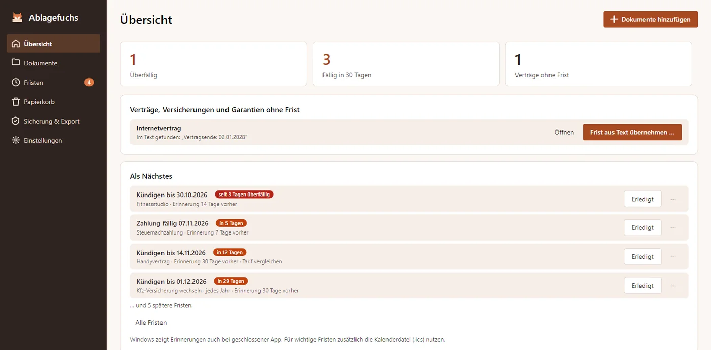
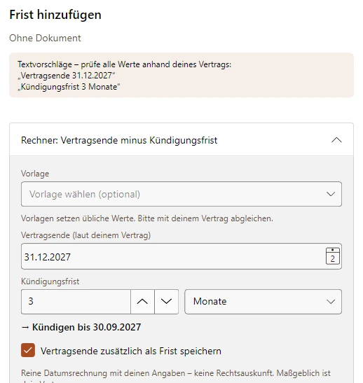
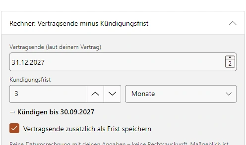
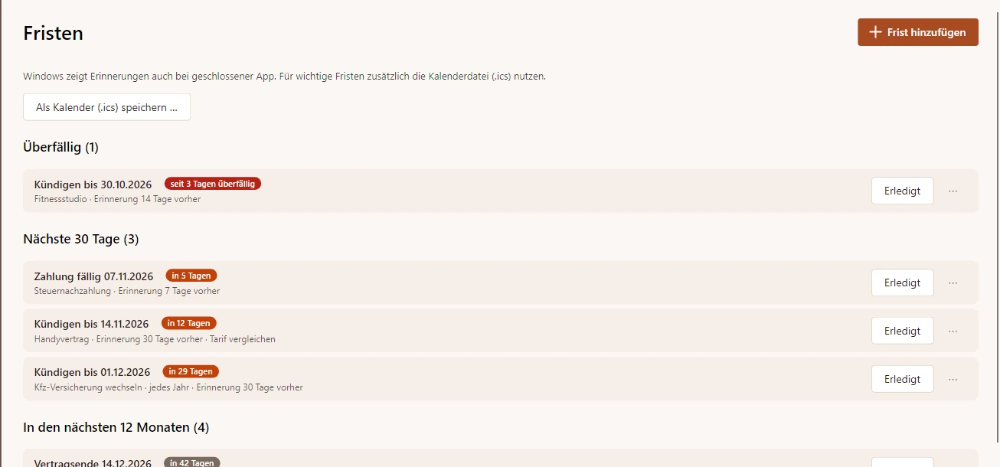
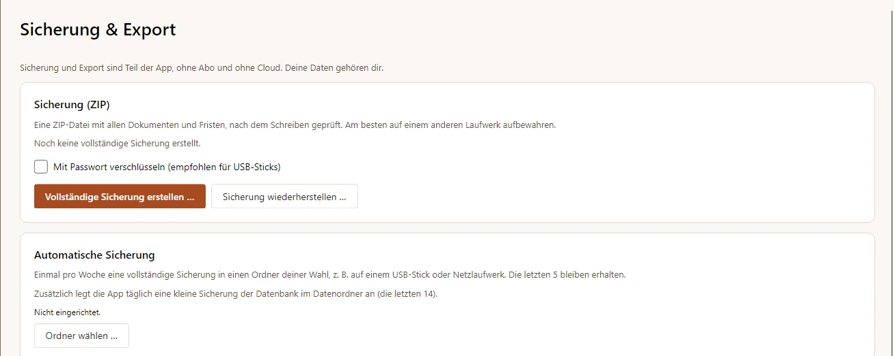
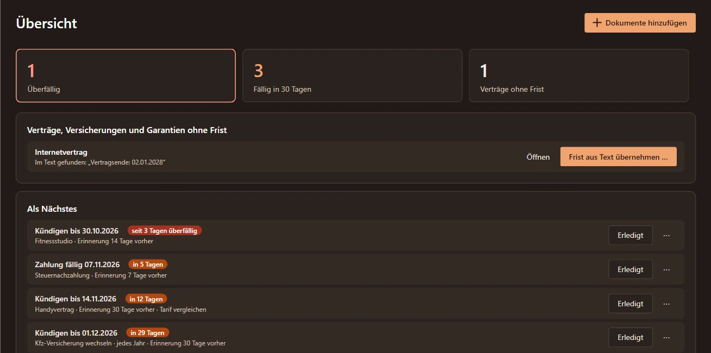

Offline-Texterkennung
Windows-OCR macht Scans und Fotos durchsuchbar. Ein installiertes Tesseract dient als Ausweichlösung.
Fristen- und Vertragsordner für Windows
Verträge, Rechnungen und wichtige Schreiben an einem Ort auf deinem PC. Lege Kopien ab, erkenne Text offline und behalte deine Fristen im Blick. Ohne Konto, ohne Cloud.
Im Microsoft Store ansehenSo funktioniert’s
In Vorbereitung für den Microsoft Store. Der Button führt derzeit zur Store-Startseite.

PDFs, Scans und Handyfotos per Drag-and-drop oder als ganzen Ordner hinzufügen. Ablagefuchs prüft die Kopie und erkennt doppelte Dateien.
Text offline erkennen lassen, Vorschläge für Typ, Datum und Absender prüfen und Tags ergänzen. Du entscheidest, was gespeichert wird.
Mit Wortanfängen oder ohne Umlaute suchen. Fristen eintragen und den gewünschten Vorlauf für Windows-Benachrichtigungen wählen.
Windows-OCR macht Scans und Fotos durchsuchbar. Ein installiertes Tesseract dient als Ausweichlösung.
Suche in Titel, Absender, Tags und erkanntem Text – auch mit Wortanfängen und ohne Umlaute.
Kündigen-bis, Vertragsende, Garantie, Zahlung oder Ablauf: Überfälliges und die nächsten 30 Tage auf einen Blick.
Vertragsende minus Kündigungsfrist ergibt dein Kündigen-bis-Datum. Die Angaben aus deinem Vertrag trägst du selbst ein.
Einmalige oder wiederkehrende Fristen und frei wählbarer Vorlauf. Als ICS-Datei auch für deinen Kalender.
Dokumenttypen, Tags und Papierkorb helfen beim Aufräumen. Identische Dateien werden nicht doppelt abgelegt.
Keine Cloud, kein Konto, keine Werbung und kein Tracking. Deine Dokumente liegen als normale Dateien auf deiner Festplatte.
Ablagefuchs arbeitet mit geprüften Kopien. Deine Originaldateien werden weder verändert noch verschoben oder gelöscht.
Bei Nutzung erstellt die App höchstens einmal täglich eine Datenbanksicherung. Sie enthält keine Dokumentdateien; erstelle eine vollständige ZIP-Sicherung und bewahre eine Kopie auf einem anderen Laufwerk auf.
Vom Import zur Sicherung: Text prüfen, Kündigen-bis berechnen und die bestätigte Frist im Blick behalten.
Lokale Entwurfsbilder aus Avalonia-Headless auf macOS. Native Windows-Aufnahmen und sichtbare PDF-Vorschau stehen noch aus.






30 Tage oder bis zu 100 Dokumente testen – je nachdem, was zuerst erreicht ist. Danach für 24,99 € einmalig weiter neue Dokumente importieren. Kein Abo.
Suchen, Fristen, Erinnerungen, Sicherung und Export bleiben auch nach der Testphase kostenlos. Nur der Import neuer Dokumente wird gesperrt.
In Vorbereitung für den Microsoft Store. Der Button führt derzeit zur Store-Startseite.
Ja. Ablagefuchs legt eine geprüfte Kopie ab und lässt die Originaldatei unverändert an ihrem bisherigen Ort.
Lokal auf deinem PC unter %LOCALAPPDATA%\MinhStudios\Ablagefuchs. Die Dokumentkopien liegen als normale Dateien auf deiner Festplatte; es gibt keine Cloud-Synchronisierung.
Sie läuft lokal mit Windows-OCR und den installierten Windows-Sprachpaketen. Ein installiertes Tesseract kann als Ausweichlösung dienen.
Windows kann geplante Erinnerungen auch bei geschlossener App anzeigen. Aktiviere Windows-Benachrichtigungen. Bis zu 200 Erinnerungszeitpunkte werden innerhalb von 400 Tagen geplant; öffne die App regelmäßig, um die Planung zu aktualisieren. Die Daten stammen aus deinen Eingaben; bitte prüfe sie.
Nein. Die App speichert deine Angaben und rechnet damit. Sie prüft keine gesetzlichen Fristen, Vertragsbedingungen oder Aufbewahrungspflichten und bietet keine Rechts- oder Steuerberatung.
Nach 30 Tagen oder 100 Dokumenten endet die Testphase. Ein Einmalkauf schaltet weitere Importe frei. Deine vorhandenen Dokumente bleiben durchsuchbar; Fristen, Erinnerungen, Sicherung und Export bleiben nutzbar.